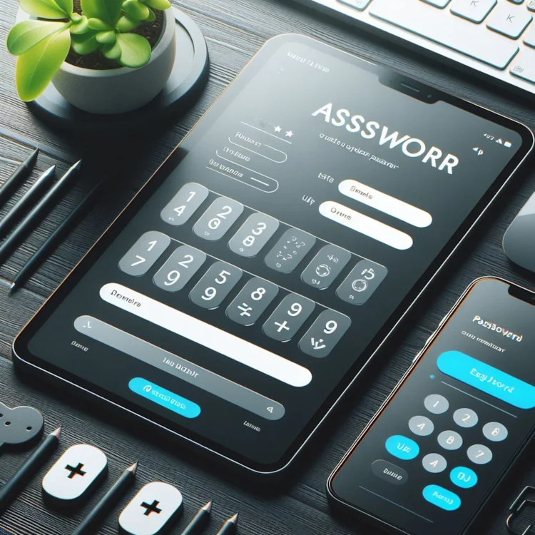

Error: Your password length needs to be between 8 - 64

Why Strong Passwords Are Essential:
Protection Against Cybercriminals: Passwords act as the first line of defense against cyber threats.
They safeguard personal information, financial data, and digital identities.
Unauthorized Access: Strong passwords prevent unauthorized individuals from gaining access
to your online accounts and sensitive data.
Defense Against Data Breaches: A robust password reduces the risk of data breaches, which can
have severe consequences for individuals and organizations
Characteristics of Strong Passwords:
Length:Longer passwords are more secure. Aim for at least 12 characters.
Complexity:Use a mix of uppercase and lowercase letters, numbers, and special symbols.
Uniqueness:Avoid reusing passwords across different accounts.
Avoid Common Words:Steer clear of easily guessable words or phrases (e.g., “password123”).
Instead, create something unique and unrelated to personal information.
Best Practices for Strong Passwords:
Passphrases:Consider using a passphrase (a series of random words) instead of a single word.
Avoid Dictionary Words:Hackers use automated dictionary-based attacks, so avoid common words.
Change Regularly:Regularly update your passwords to stay ahead of evolving threats.
Use a Password Manager:Consider using a password manager to securely store and manage your passwords.
General Cybersecurity Facts
Multi-Factor Authentication (MFA):Enable MFA whenever possible. It adds an extra layer of security
by requiring a second form of authentication (e.g., a text message or fingerprint).
Phishing Attacks:Be cautious of phishing emails and messages. Cybercriminals often
impersonate legitimate entities to steal login credentials.
Software Updates:Keep your software (including operating systems and applications) up to date.
Updates often include security patches.
Secure Wi-Fi Networks:Avoid using public Wi-Fi for sensitive transactions.
If you must, use a virtual private network (VPN).